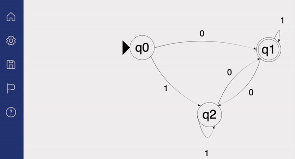
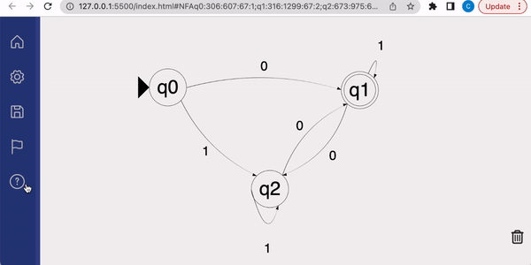
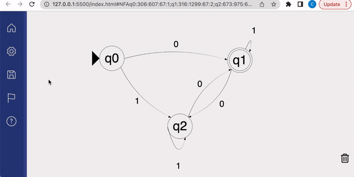

The Basics
Double click to create vertices, additional double clicks to toggle final
Right click on vertices (or ctrl) drag to create edges
Right click on vertices or edge texts to inspect
Left click drag on vertices or edge texts to drag
Left click drag on empty space to pan, use scroll wheel to zoom
"ctrl+z" to undo, "ctrl+shift+z" to redo (please use "ctrl" instead of "cmd" on Mac)
"dd" to delete (quickly press 'd' two times)
Running Input
Enter the input string and press run.
Stepping Through Input
You can also step through the computation one character at a time.

Download PNG
After you finish drawing your automaton, you can download a PNG of the drawing by clicking "Save as png" on the toolbar.
Permalink
This feature enables sharing machine drawings. Permalink stands for permanent link, meaning once you have created a link to share with your others, that link can uniquely decode back to a machine.
